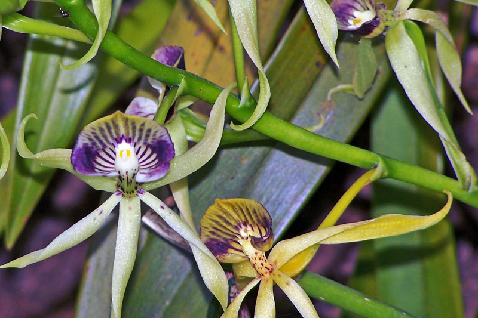

Belize’s breathtaking biodiversity unfolds through abundant rainfall, balmy temperatures, and vast swathes of pristine land. More than 4,000 different native flowering plants can be found in Belize, as well as more than 700 different species of trees and other flora, showcasing the incredible richness of Belize flora and fauna. Scientists have only just begun to catalog all of the different plants in the country—a challenging task given that more than 70% of Belize is forest, rainforest, or jungle, much of it old growth and incredibly dense. Explore the wonders of Belize’s unique ecosystems as we delve into the fascinating details of a few extraordinary flora and fauna found in this diverse and enchanting country.
